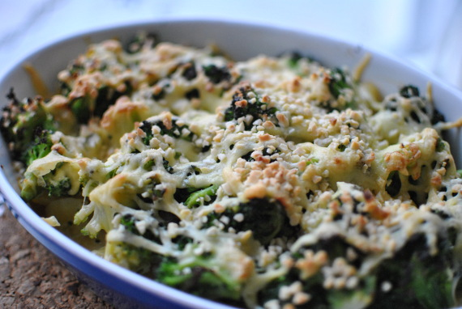

Kartoffel-Brokkoli-Gratin

- Zubereitung: ca. 10 Minuten (ohne Auftauzeit)
- Backzeit: ca. 20 Minuten
- Für 2 Personen
Zutaten
- 300 g TK-Brokkoli
- 1 Pck. Bratkartoffeln (400g, Vakuumpack)
- 100 g Sahne
- 50 g geriebener Gratinkäse
- 2 EL Mandelstifte
- Muskatnuss
Zubereitung
- Den Brokkoli rechtzeitig aus dem Gefrierfach nehmen, in eine Schüssel geben und auftauen lassen.
- Den Backofen auf 220° Celsius (Umluft 200° Celsius) vorheizen. Die Bratkartoffeln aus der Packung in eine Auflaufform drücken und darin gut verteilen. Die Brokkoliröschen je nach Größe halbieren oder ganz lassen. Mit Muskatnuss, Salz und Pfeffer
würzen, zu den Kartoffeln in die Auflaufform geben und untermischen. Die Sahne gleichmäßig darüber gießen. Den geriebenen Käse und die Mandelstifte darüber streuen.
- Die Auflaufform auf den Rost (Mitte) in den vorgeheizten Backofen stellen und das Gratin in ca. 20 Minuten goldbraun backen.